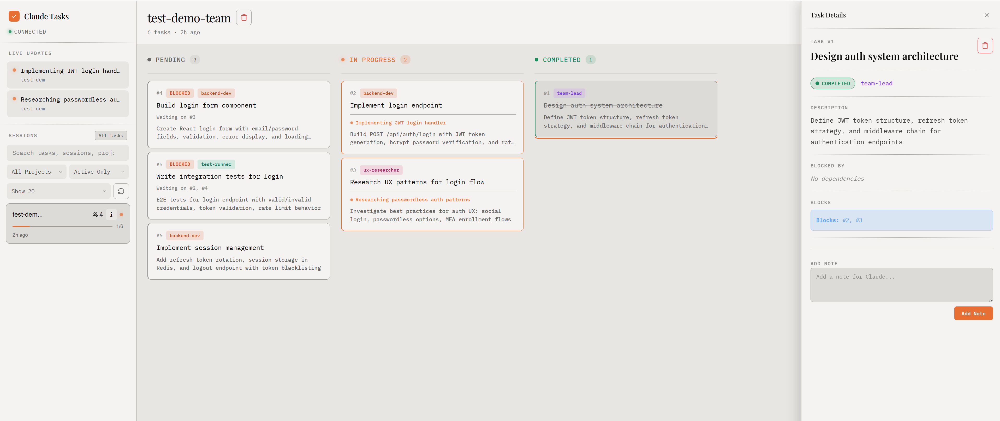
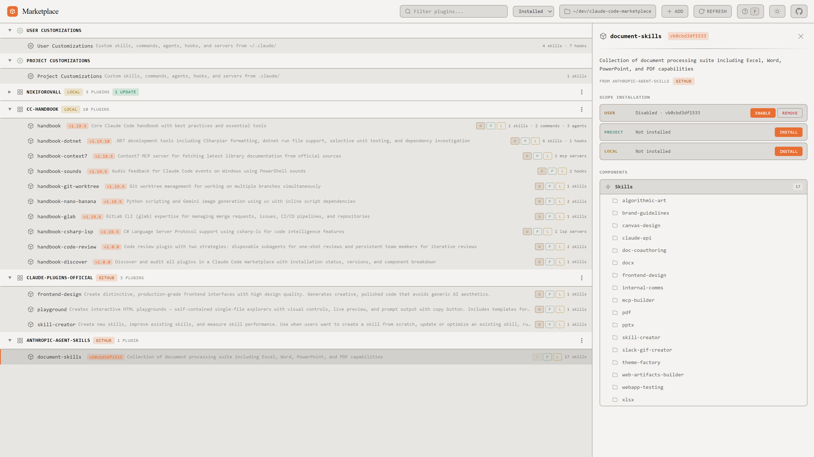
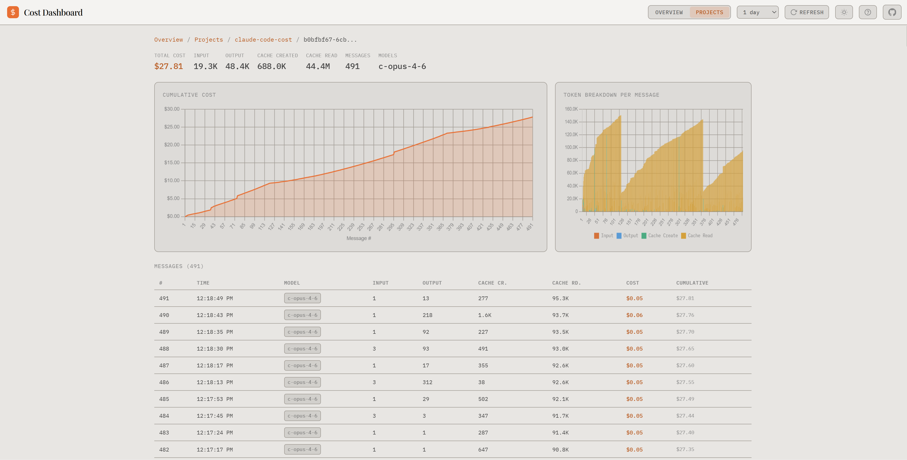

Kanban board, plugin marketplace, and cost dashboard — unified in a single keyboard-driven launcher. Zero config.
$ npx claude-code-hub --open

Included Tools
Real-time Kanban dashboard for Claude Code sessions. Watch tasks, agents, and teams as Claude works.

Browse, install, and manage Claude Code plugins. Supports local, user, and project scopes.

Usage and cost visualization. Drill down from totals to projects to individual sessions.
Features
npx claude-code-hub --open starts all three tools and opens your browser. No separate terminals needed.
Switch tools with Alt+1/2/3 or Ctrl+Alt+Arrow. No mouse needed — each sub-app has its own shortcuts too.
Install as a standalone app. No browser chrome, no tab clutter — each tool fills the entire window.
Each tool gets its own port with automatic fallback if busy. The hub detects actual ports from child process output.
Tools can deep-link to each other via postMessage. Jump from a cost session straight to its Kanban board.
Vanilla JS, Express, zero bundling. Works with Node 18+ out of the box. Published on npm.
Setup
One-time setup for full Kanban observability — agent logs, live indicators, context window.
Starts all three tools on separate ports and opens a unified viewer in your browser.
Use Claude Code as usual. The Hub updates in real time — switch between tools with keyboard shortcuts.
FAQ
Kanban — real-time task board. Marketplace — plugin browser and installer. Cost — usage and spend dashboard. Each tool also works standalone.
Yes. Each tool is its own npm package: npx claude-code-kanban, npx claude-code-marketplace, npx claude-code-cost. The Hub just wraps them into one window.
No. Hooks are lightweight shell scripts that append data to JSONL files. They run asynchronously and have negligible overhead.
Each tool falls back to a random available port automatically. The Hub detects actual ports from stdout and configures iframes accordingly. You can also pass --port, --kanban-port, etc.
No. You can browse past sessions and costs anytime. Live updates appear when Claude starts working.